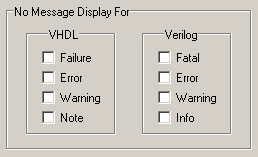

You control message
logging for SystemVerilog assertions via severity tasks ($fatal,
$error, $info, $warning) in an action block. You can determine which messages
actually print in Questa SIM by
changing variables in the modelsim.ini file
or via the Runtime Options dialog.
Procedure
- To set permanent defaults
for message logging, edit the IgnoreSVAError, IgnoreSVAFatal, IgnoreSVAInfo, and IgnoreSVAWarning variables in the modelsim.ini file.
- To edit
the message logging for the current simulation run only, select and
click the Message Severity tab in the Runtime Options dialog. Check
the appropriate box(es) under Verilog (Figure 1) and click OK.
Figure 1. Selecting Message Logging